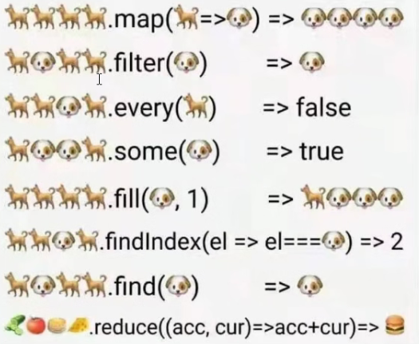

# ES5
# join & split
const colors = 'green, red, black'; | |
const colorsArr = colors.split(','); | |
console.log(colorsArr); // [ 'green', ' red', ' black' ] | |
const colorsStr = colorsArr.join(','); | |
console.log(colorsStr); // green, red, black |
# push & pop
const colors = []; | |
colors.push('green', 'red'); | |
console.log(colors); // ['green', 'red'] | |
const item = colors.pop(); | |
console.log(item); // 'red' | |
console.log(colors); // ['green'] |
# shift & unshift
const colors = ['green', 'red']; | |
const item = colors.shift(); | |
console.log(item); // 'green' | |
console.log(colors); // ['red'] | |
colors.unshift('blue', 'grey'); | |
console.log(colors); // ['blue', 'grey', 'red'] |
# reverse & sort
const values = [1, 3, 44, 43, 654, 0]; | |
values.reverse(); | |
console.log(values); // [ 0, 654, 43, 44, 3, 1 ] | |
values.sort(); | |
console.log(values); // [0, 1, 3, 43, 44, 654] 首字母开始比较 | |
values.sort((val1, val2) => val2 - val1); | |
console.log(values); // [ 654, 44, 43, 3, 1, 0 ] |
# concat, slice & splice
const colors = ['red', 'green', 'blue']; | |
const colors2 = colors.concat('yellow', ['black']); | |
console.log(colors2); // [ 'red', 'green', 'blue', 'yellow', 'black' ] | |
const colors3 = colors2.slice(1, 5); | |
console.log(colors3); // [ 'green', 'blue', 'yellow', 'black' ] | |
console.log(colors2); // [ 'red', 'green', 'blue', 'yellow', 'black' ] | |
const remove1 = colors2.splice(0, 1); | |
console.log(remove1); // [ 'red' ] | |
console.log(colors2); // [ 'green', 'blue', 'yellow', 'black' ] | |
const remove2 = colors2.splice(1, 0, 'red', 'pink'); | |
console.log(remove2); // [ ] | |
console.log(colors2); // [ 'green', 'red', 'pink', 'blue', 'yellow', 'black' ] |
# indexOf & lastIndexOf
const values= [1, 3, 4, 6, 7, 4, 3, 1]; | |
console.log(values.indexOf(4)); // 2 | |
console.log(values.lastIndexOf(4)); // 5 | |
console.log(values.lastIndexOf(4, 4)); // 2 | |
console.log(values.lastIndexOf(4, 5)); // 5 |
# every, filter, forEach, map & some
every & some
const values = [1, 3, 4, 6, 7, 4, 3, 1]; | |
const everyResult = values.every((item, index, array) => { | |
return item > 2; | |
}); | |
console.log(everyResult); // false | |
const someResult = values.some((item, index, array) => { | |
return item > 2; | |
}); | |
console.log(someResult); // true |
filter
const values = [1, 3, 4, 6, 7, 4, 3, 1]; | |
const filterResult = values.filter((item, index, array) => { | |
return item > 2; | |
}); | |
console.log(filterResult); // [ 3, 4, 6, 7, 4, 3 ] | |
const obj = [ { num: 3 }, { num: 4 }, { num: 1 },{ num: 5 },{ num: 0 }, { num: 4 }]; | |
const filterObjResult = obj.filter((item, index, array) => { | |
return item.num > 2; | |
}); | |
console.log(filterObjResult); // [ { num: 3 }, { num: 4 }, { num: 5 }, { num: 4 } ] |
map
const values = [1, 3, 4, 6, 7, 4, 3, 1]; | |
const mapResult = values.map((item, index, array) => { | |
return item * 2; | |
}); | |
console.log(mapResult); // [ 2, 6, 8, 12, 14, 8, 6, 2 ] | |
const obj = [ { num: 3 }, { num: 4 }, { num: 1 },{ num: 5 },{ num: 0 }, { num: 4 }]; | |
const mapObjResult = obj.map((item, index, array) => { | |
return item.num; | |
}); | |
console.log(mapObjResult); // [ 3, 4, 1, 5, 0, 4 ] |
forEach
const values = [1, 3, 4, 6, 7, 4, 3, 1]; | |
values.forEach((item, index, array) => { | |
array[index] = item * 2; | |
}); | |
console.log(values); // [ 2, 6, 8, 12, 14, 8, 6, 2 ] |
# reduce & reduceRight
const values = [1, 3, 4, 4, 4, 9]; | |
const sum = values.reduce((prev, cur, index, array) => { | |
return prev + cur; | |
}); | |
console.log(sum); // 25 | |
const sumRight = values.reduceRight((prev, cur, index, array) => { | |
return prev + cur; | |
}); | |
console.log(sumRight); // 25 |
# ES6
# 拓展运算符...
const colors = ['green', 'red', 'pink']; | |
const colors1 = ['white', 'grey']; | |
const colors2 = [...colors, ...colors1]; | |
console.log(colors2); // [ 'green', 'red', 'pink', 'white', 'grey' ] |
# Array.from() & Array.of()
const obj = { | |
'0': '123', | |
'1': '456', | |
'2': 'c', | |
length: 4 | |
} | |
const arr = Array.from(obj); | |
console.log(arr); // [ '123', '456', 'c', undefined ] | |
const values = [1, 1, 3, 5]; | |
const setValue = new Set(values); | |
const newArr = Array.from(setValue); // 也可以直接 [...new Set (values)] | |
console.log(newArr); // [ 1, 3, 5 ] | |
const newArr2 = Array.from(newArr, x => x * 2); | |
console.log(newArr2); // [ 2, 6, 10 ] | |
console.log(Array.of(undefined, 1, null)); // [ undefined, 1, null ] |
# copyWithin(target, start = 0, end = this.length)
有效时应 start > end
const arr = [1, 3, 4, 4, 5, 8, 10, 1, 0].copyWithin(0, 3, 4); | |
console.log(arr); // [ 4, 3, 4, 4, 5, 8, 10, 1, 0 ] | |
const arr = [1, 3, 4, 4, 5, 8, 10, 1, 0].copyWithin(0, 3, 8); | |
console.log(arr1); // [ 4, 5, 8, 10, 1, 8, 10, 1, 0 ] |
# fill
const colors = ['green', 'red', 'pink']; | |
const colors1 = colors.fill('white'); | |
console.log(colors1); // [ 'white', 'white', 'white' ] |
# find & findIndex
const values = [1, 3, 4, 5, 6, NaN]; | |
const findResult = values.find(num => num > 4 ); // 找不到为 undefined | |
console.log(findResult); // 5 | |
const findIndexResult = values.findIndex(num => num > 4 ); // 找不到为 - 1 | |
console.log(findIndexResult); // 3 |
# entries(), keys() & values()
const colors = ["red", "green", "blue"]; | |
for (const index of colors.keys()) { | |
console.log(index); // 0 1 2 | |
} | |
for (const ele of colors.values()) { | |
console.log(ele); // red green blue | |
} | |
for (const [index, ele] of colors.entries()) { | |
console.log(index, ele); | |
} | |
// 0 red | |
// 1 green | |
// 2 blue |
# ES7
# includes
const values = [1, 3, 4, 5, 6, NaN]; | |
console.log(values.includes(NaN)); // true | |
console.log(values.includes(4, 3)); // false |
# ES10
# flat & flatMap
const values = [1, 2, [3, 4]].flat(); | |
console.log(values); // [1, 2, 3, 4] | |
const valuesDeep = [1, [2, [3]]]; | |
console.log(valuesDeep.flat(Infinity)); // [1, 2, 3] |
# 形象图
